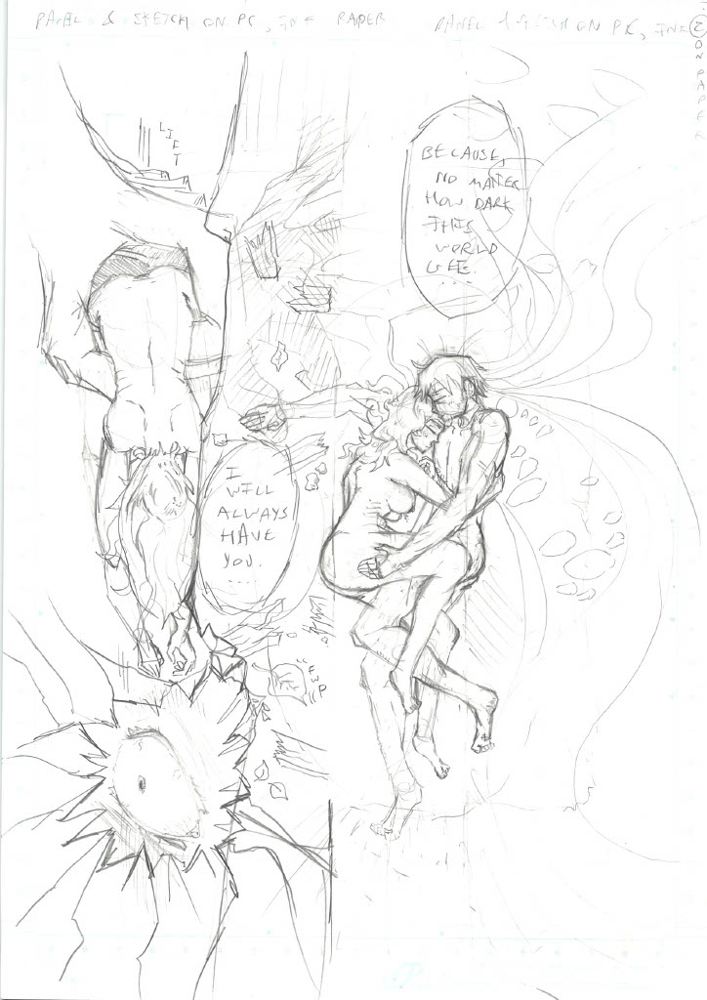
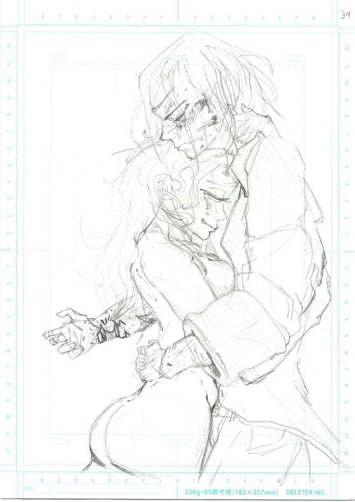
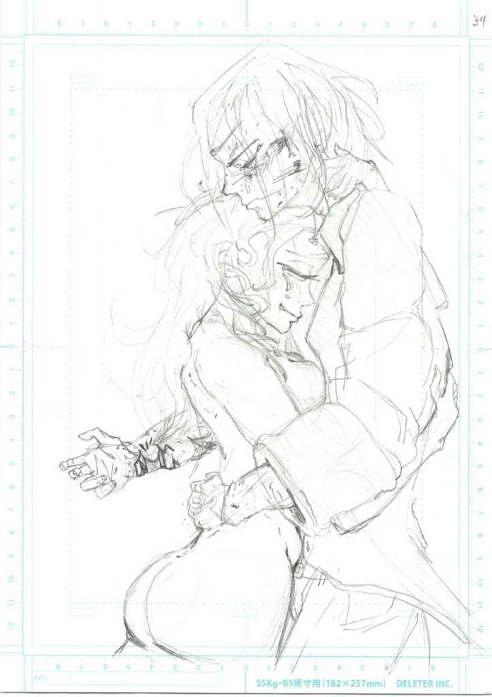
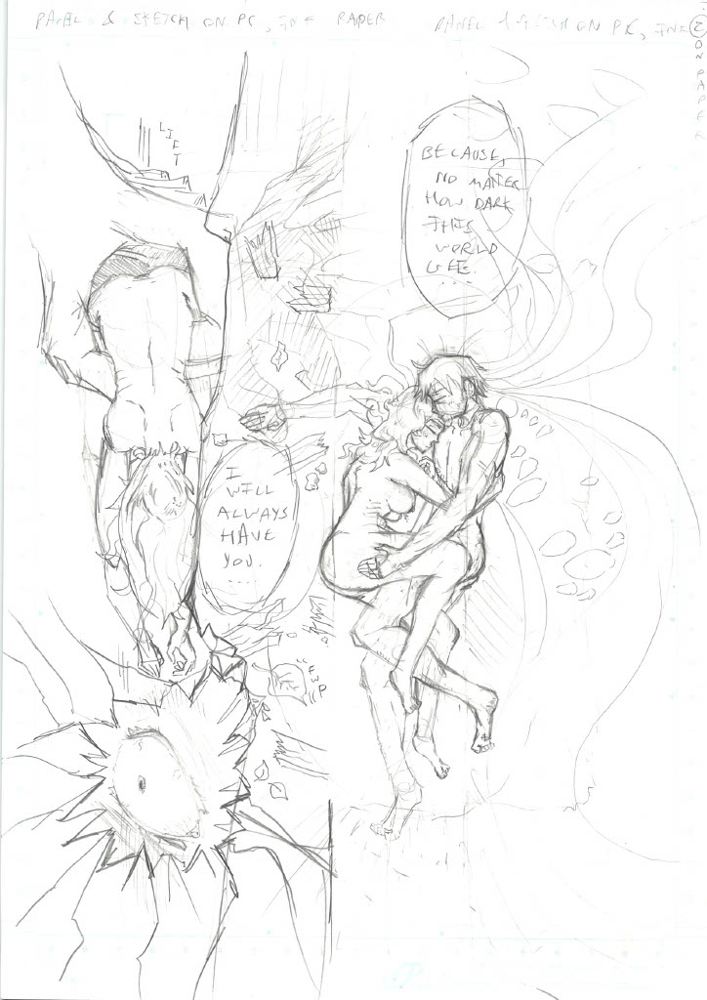
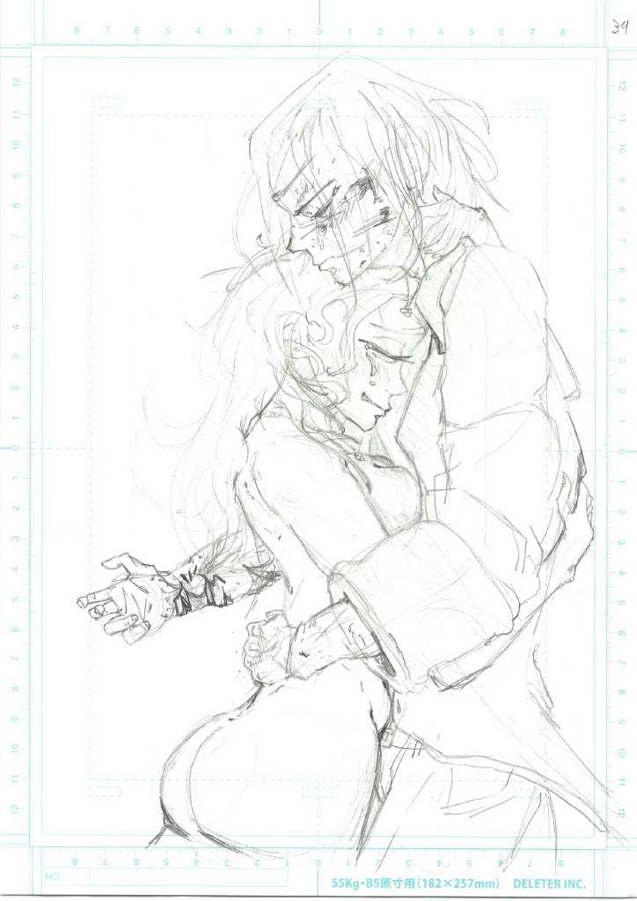

"Heart of Darkness"
 

Noah Bowers Website
I aim to inspire, motivate, and create futures of open-minded, happy, healthy people by creating awesome entertainment and thought-provoking art pieces underscored by deep philosophical development and heartfelt or comedic moments. A way in which I approach that is the blend of extreme fantasy with the hard truths of reality. I use cartooned characters, fantastical worlds, and colorful, visceral visuals in order to tell stories. In my processes, I use entirely traditional or traditionally-inspired techniques, creating highly polished, often digital end products such as animation, comics, film, and music. Practices such as drawing with pencil and ink, the study of language and practice of translation, or the development of traditional film. Through all this, I hope to expose how mundane or “meaningless” things (like telling stories and drawing) are essential to humanity’s survival, or, at the very least, essential to loving life and having fun…
Skills:
Illustration
Manga and anime stylization
Cartooning
Concept design (characters, environments, objects)
Video editing
Videography
Directing
Writing
Screenplay
Comic manuscript
Public speaking
Painting
Gouche
Watercolor
Oil painting
Research and synthesis
Music production (simple digital instrumental scoring, beginner vocal, piano, and guitar skills)
Studying japanese language as of 2025
"Heart of Darkness"


Though I love all art, my focus is manga.
My reasons for creating manga are vast. The most immediate reason is that I’ve always wanted to create my own animated series. At a certain point, I discovered that would be nearly impossible alone, in terms of the quality I wanted. Comics became a great solution to that need, since I could create a visual cartooned story myself. Anime became my main inspiration, and I discovered how anime is so heavily based off of manga. I dove into what makes the manga industry tick, and I was blown away. If nothing else, by the fact that mangaka are the sole originator, director, writer, and main artist of their work. I believe that’s something I am wholly capable of, and that a lot of other artists are as well. I aim to create my own manga, and help others do the same.
I’m also deeply captivated by Japan in general. I visited there in the winter of 2024. I think their philosophies for life and high regard for art oozes through manga. Manga can be anything from a slice of life, feel-good comedy, to a dark, twisted critique on the modern world. Not only that, the manga production process of Japan retains many traditional methods. Drawing on pen and paper, photography, etc… Beyond that, I find myself constantly connecting with the ideas and ideals of Japanese artists, whose work I am graced to be able to understand via translation. I hope to one day be able to help translate such works as well.
Contact:
Noah Bowers
@thenoahbowers@gmail.com
734-301-0815
The reason the website is simply formatted: Because I believe that digital technology is a great tool but not where I want to spend most of my time. Not right now, at least. I find more joy, meaning, and substance through creating with traditional media. By coding this site myself in html, I force it to become the simplest possible version. Not having to deal with any clunky site builder is so freeing…